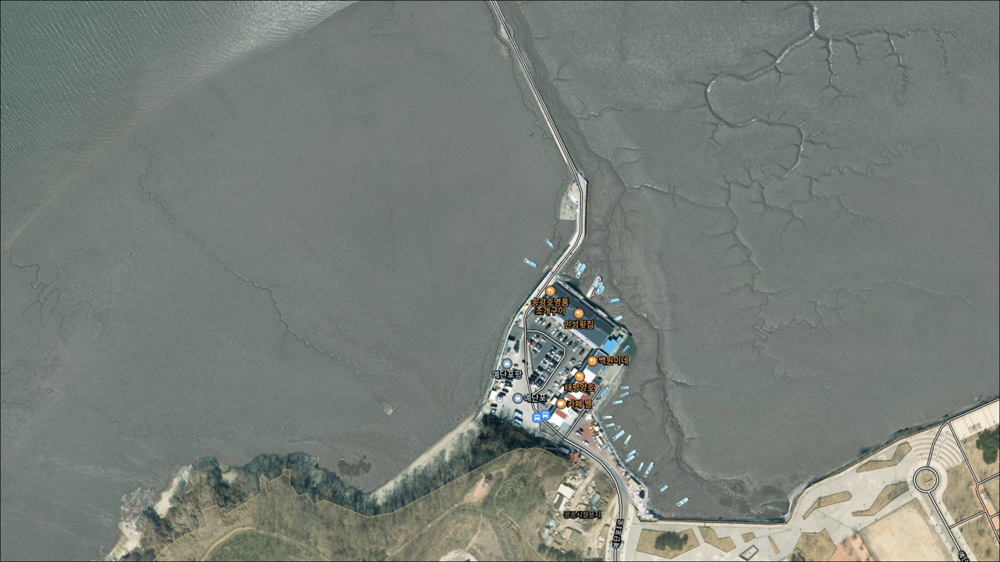
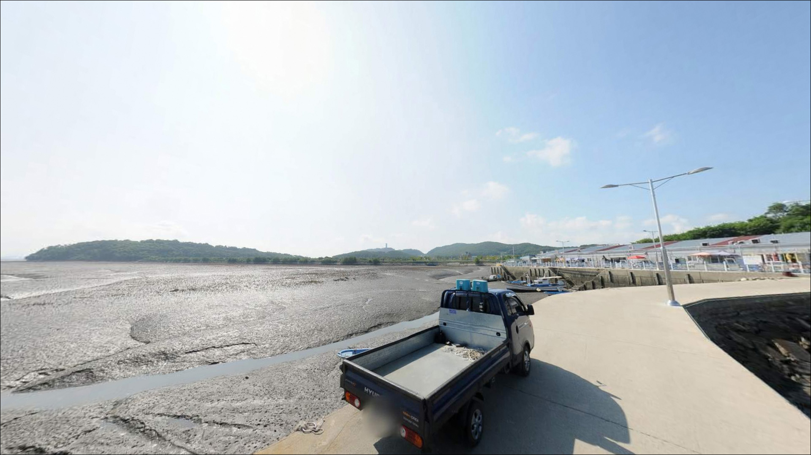
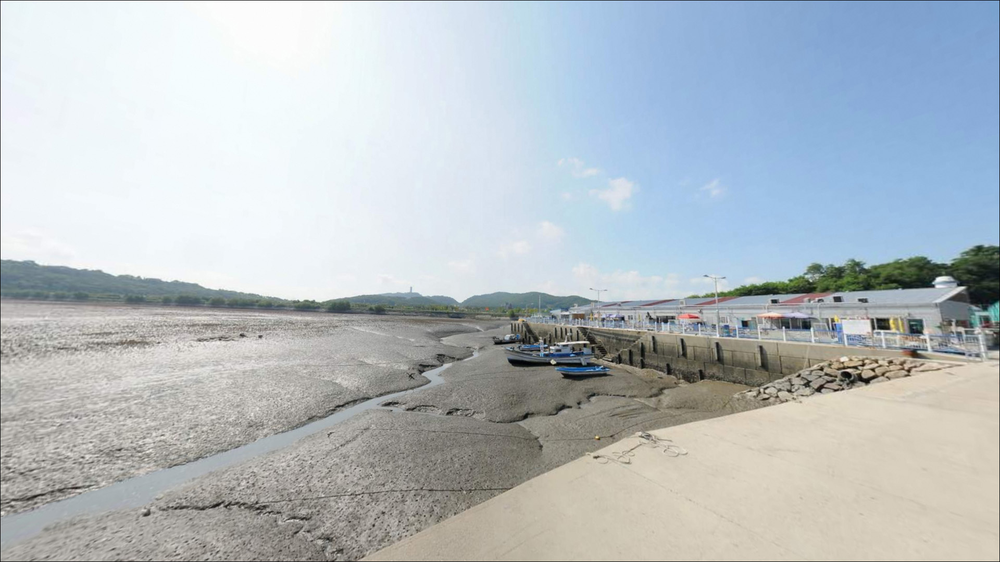
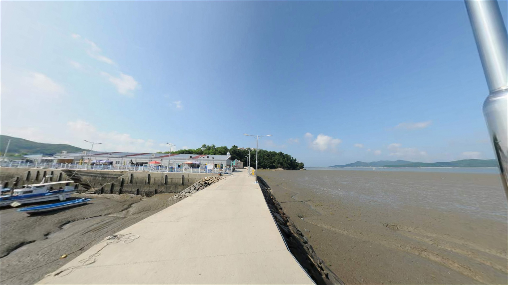
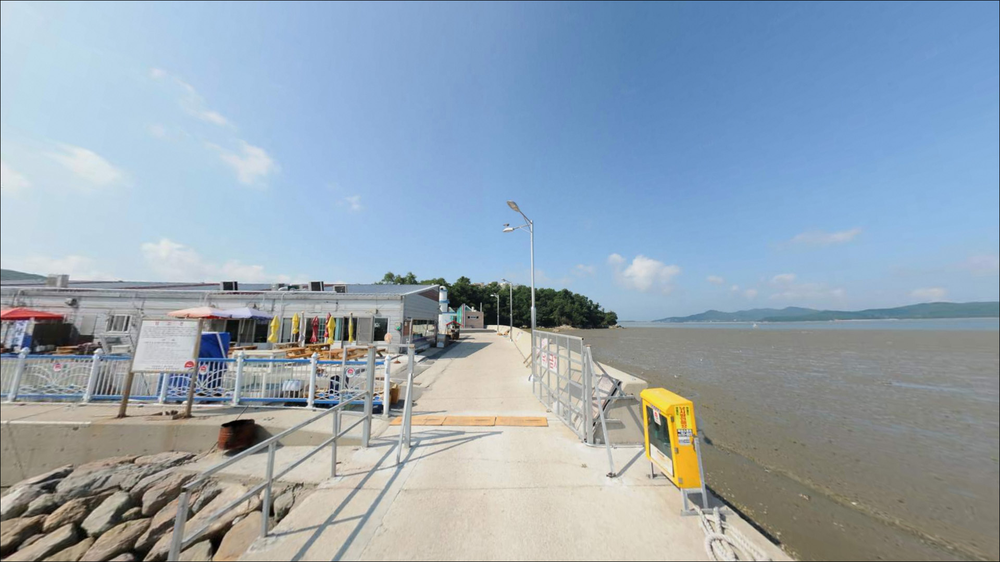
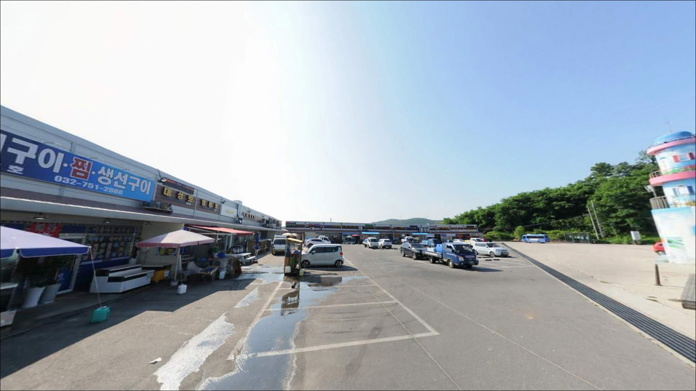
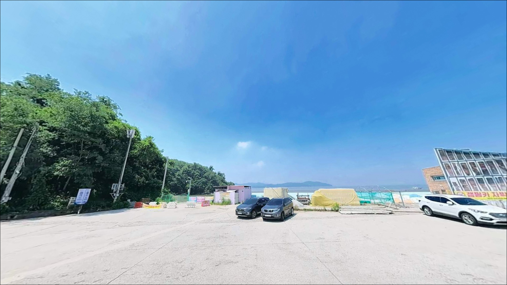
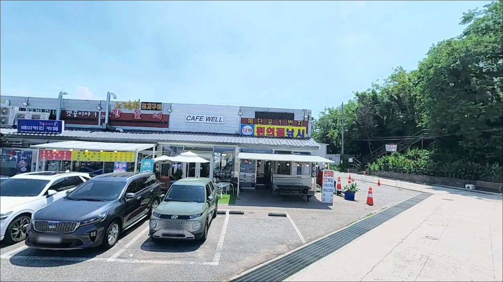
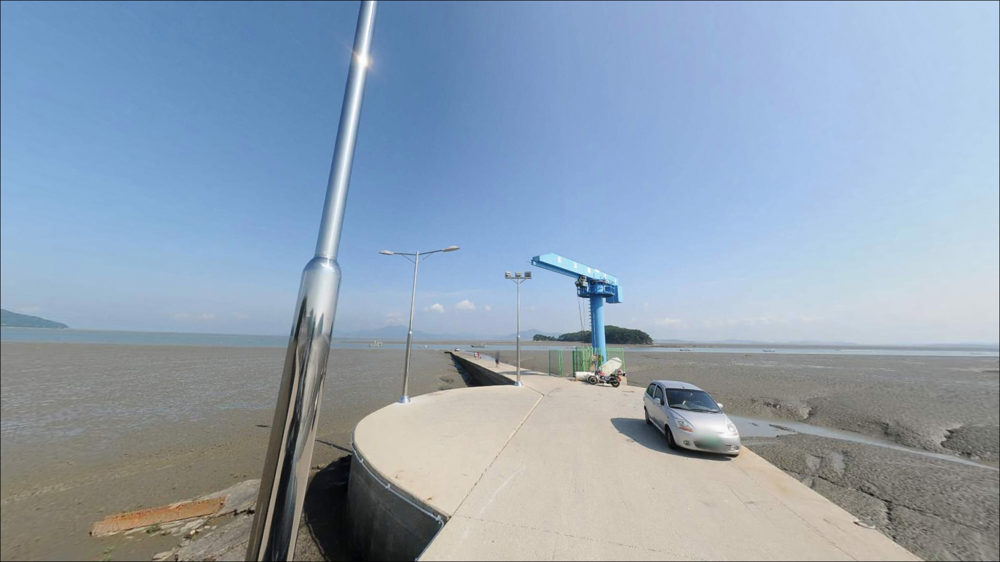

예단포항, 영종도 인천 중구 바다와 가장 가까이 머무는 차박, 낚시 해안 명소
이 페이지에는 광고(제휴 링크 포함)가 있으며, 광고 링크를 통해 구매하면 운영자가 판매 수익 또는 수수료를 받을 수 있습니다. 포인트 사진: 카카오맵 스카이뷰·로드뷰. 이 페이지의 지도·사진 이미지는 카카오맵의 실제 서비스 이미지와 다를 수 있습니다.


포인트 안내
예단포항
인천광역시 중구 운북동 1264-1
예단포항 방문 전 가장 많이 틀리는 판단은
도착 시각을 물때와 무관하게 잡는 일입니다.
서해 특성상 간조에는 방파제 앞 갯벌이 크게 드러나,
원투낚시 채비가 뻗어나갈 수심이
실질적으로 남지 않는 상황이 됩니다.
이 글은 예단포항의 진입 환경, 낚시 방식 적합성,
물때 기반 공략 기준에 집중하며,
조황 단정이나 시설 운영 확인 정보는
이 글의 범위에 포함되지 않습니다.
예단포항은 영종도 북쪽 해안,
강화도 방면 서해를 면한 소규모 어항입니다.
2007년 어촌정주어항으로 지정된 이 포구는
약 150m 방파제와 선착장을 중심으로 구성되어 있으며,
망둥어 원투낚시 포인트로
낚시 커뮤니티에 반복해서 이름이 오르는 곳입니다.

1. 진입 동선과 포인트 접근성
영종대교를 건너 미단시티 방면으로 진입하면
예단포1로를 통해 항구까지
포장도로로 이어집니다.
영종도 북쪽 평탄 해안 지형 특성상
급경사나 비포장 구간 없이 이어지는 편이라,
일반 승용차부터 중형 SUV 수준까지
진입에 큰 어려움이 없는 구조입니다.
항 앞에는 공영 주차장이 조성되어 있습니다.
무료 주차 경험을 전하는 방문자들이 다수 있으며,
회차 공간도 비교적 넉넉한 편입니다.
다만 주말에는 예단포 둘레길과 횟집 방문객이 겹쳐
오전 이후 주차 공간이 빠르게 줄어드는 경우가 있어
이른 시간 진입이 유리합니다.
어촌뉴딜 사업이 2026년부터 2029년까지
진행될 예정이므로,
공사 시기에 따라 주차 구역이나
방파제 접근 동선 일부가 바뀔 수 있습니다.
방문 전 현장 상황을 미리 검색해
확인하는 편이 안전합니다.

2. 차박 환경 및 야간 체류 여건
예단포항은 횟집센터와 식당가가
항 앞쪽에 밀집한 관광지형 포구 성격이 강합니다.
야간에도 상업 시설 조명이 일정 수준
유지되는 편이라,
조용하고 어두운 야간 체류 환경을
기대하기에는 적합하지 않습니다.
낚시 후 짧은 대기·휴식 수준이
이 포구의 분위기에 더 맞는 편입니다.
북서쪽 서해 방향으로 열린 구조 특성상
북서풍이 강한 날에는
바람 영향을 직접 받는 위치입니다.
기상 예보에서 풍속이 강하다면
차박 체류 여건이 불편해질 수 있으므로,
출발 전 풍속·파고 예보를 반드시 확인해야 합니다.


3. 주변 편의시설 및 인프라 현황
예단포 회센터와 횟집 단지가
항 바로 앞에 자리해 있습니다.
낚시 후 현장에서 바로 식사를 해결할 수 있는
인프라가 갖춰져 있다는 점은
이 포인트의 실용적인 장점 중 하나입니다.
운영 시간은 방문 전 현장에서 확인하는 편이 좋습니다.
화장실은 주차장 부근에
등대 모양 야외 화장실이 있습니다.
예단포 둘레길 5km가 함께 조성되어 있어
낚시 외 산책 수요도 있는 공간입니다.
반경 3km 이내 미단시티 방향으로
편의점과 카페가 위치해 있어,
간단한 보급은 인근에서 해결 가능합니다.

4. 방문 전 반드시 챙겨야 할 준비사항
가장 먼저 챙겨야 할 것은 물때 확인입니다.
바다타임에서 예단포 물때를 검색하면
해당 일자의 만조·간조 시간을 확인할 수 있습니다.
만조 전후 2~3시간이
이 포인트의 기본 낚시 시간대입니다.
원투낚시가 주력인 포인트 특성상
봉돌과 채비 여분을 넉넉히 준비하는 것이 좋습니다.
서해 조류 흐름에 채비가 밀리는 상황에 대비해
봉돌 무게를 다양하게 챙기는 편이 낫습니다.
사리 전후에는 조류가 세지는 경향이 있어
조금 전후 시간대가 채비 운용에 유리합니다.
야간 낚시를 계획하고 있다면
헤드랜턴은 필수입니다.
방파제 끝단으로 갈수록 조명 영향이
약해지는 편이라,
충분한 밝기의 개인 조명 없이는
이동 안전이 확보되지 않습니다.

5. 간조에 갯벌이 드러나는 이유 — 서해 방파제 지형과 낚시 여건
예단포항은 영종도 북쪽 해안선에서
서해 방향으로 뻗은 약 150m 방파제 구조입니다.
방파제 외항 쪽은 강화도 방향 서해를 향해
열려 있어, 만조 시 조류 영향을 받는 구간이
형성됩니다.
내항은 어선 정박 중심의
잔잔한 수면 구조입니다.
서해 소규모 항구의 전형적인 특성으로,
방파제 끝단 외항 쪽은 내항보다
조류 영향이 직접적으로 작용합니다.
방파제 끝단은 내항보다 조류 영향이 강해
원투와 루어 공략 자리를 나누는 기준이 됩니다.
만조 기준 수심은 2~4m 수준으로 추정되며,
간조에는 갯벌이 크게 노출되어
유효 낚시 수심이 크게 줄어드는 편입니다.
방파제 좌측 방향으로 갯바위 구간이
있을 가능성이 있습니다.
바다타임에 예단포방파제 좌측 갯바위가
별도 포인트로 등재되어 있어,
현장에서 접근 가능한 구간인지
직접 확인해볼 만한 지점입니다.
접근 안전성은 현장 판단이 우선입니다.
최신 조황은 가기 전에 꼭 검색해 보시기 바랍니다.


6. 예단포항에 어울리는 낚시 스타일
이 포인트에서 가장 잘 맞는 낚시는
원투낚시입니다.
모래·뻘 혼합 지형이 예상되는 방파제 외항 쪽에서
묶음추 채비에 지렁이를 달아
갯벌 수로 방향으로 던지는 방식이
망둥어·붕장어 공략에 어울립니다.
겨울부터 봄까지 망둥어 활성도가 높아지는 경향이 있어,
이 시기에 원투낚시를 주력으로 삼기 좋은 포인트입니다.
루어낚시도 이 포인트에서 시도해 볼 수 있습니다.
방파제 끝단 콘크리트 구조물 주변은
우럭(조피볼락)·노래미가 숨기 좋은
지형 조건이 됩니다.
수온이 오르는 봄~가을 시기에
지그헤드+웜 채비로 바닥을 천천히
끌어 탐색하는 방식이 어울립니다.
만조 전후 조류가 흐를 때
방파제 끝단에서 반응이 살아나는 편입니다.
방파제 좌측 갯바위 구간이 확인된다면
찌낚시 접근도 고려해 볼 수 있습니다.
갯바위 지형은 밑걸림이 잦은 편이므로
여분 채비를 충분히 준비해야 하며,
조류 방향을 먼저 파악하고
발판 안전성을 현장에서 직접 확인한 뒤
자리를 잡는 것이 기본입니다.

7. 대안 포인트와 플랜 B 동선
예단포항 자리가 없거나
조류가 너무 세서 채비 운용이 어렵다면
같은 영종도 안에서 이동을 검토할 수 있습니다.
구읍뱃터 일대는
낚시 커뮤니티에서 예단포항과 함께
영종도 원투낚시 포인트로 반복 언급되는 곳입니다.
물때와 기상 조건을 예단포항과 함께 공유하므로
이동에 따른 추가 판단이 적은 편입니다.
삼목항도 같은 영종도 내 생활낚시 포인트입니다.
원투낚시 중심으로 커뮤니티에서 언급되며,
망둥어·우럭·노래미가 기대 어종으로
자주 거론됩니다.
진입과 주차 여건이 비교적 안정적인 편이라
예단포항이 여의치 않을 때
무난하게 이동할 수 있는 선택지입니다.
차박을 겸하는 방문이라면
예단포항에서 자리 확보가 어려울 때
미단시티 중앙공원 인근 주차 공간을
대안 체류지로 검토해 볼 수 있습니다.
단, 차박 환경 여건은
현장 확인이 먼저입니다.

물때만 맞으면
예단포항은 충분합니다
서해 방파제 원투낚시에 익숙한 낚시인이라면
예단포항의 구조는 무난하게 맞는 편입니다.
망둥어를 중심으로 가볍게 시작하고 싶은
입문형 낚시인에게도 접근성 좋은 포인트입니다.
반면 수심이 깊고 조류가 살아 있는
에깅이나 감성돔 찌낚시를 기대하고 간다면
이 포인트의 지형 조건과 맞지 않습니다.
만조 전후 시간대를 맞추지 못하면
예단포항에서는 유효한 낚시 수심이
형성되지 않습니다.
물때 확인 한 번이 헛걸음과
조과 있는 하루를 가르는 기준입니다.
차박을 함께 계획하는 분이라면
횟집과 둘레길 방문객이 어우러지는
관광지형 포구 분위기를
먼저 감안해야 합니다.
야간 체류 프라이버시가 낮은 편이므로,
낚시와 짧은 휴식을 조합하는 방식으로
이 포구를 활용하는 방법이 현실적입니다.